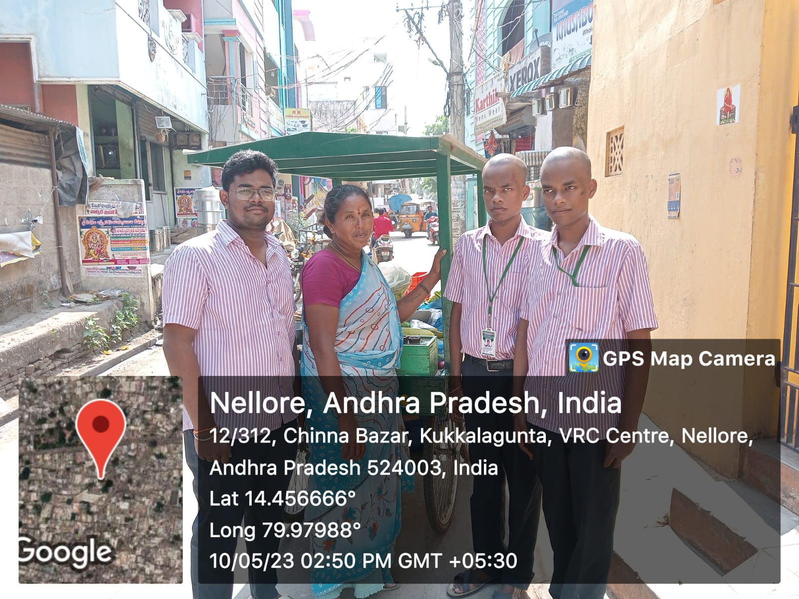
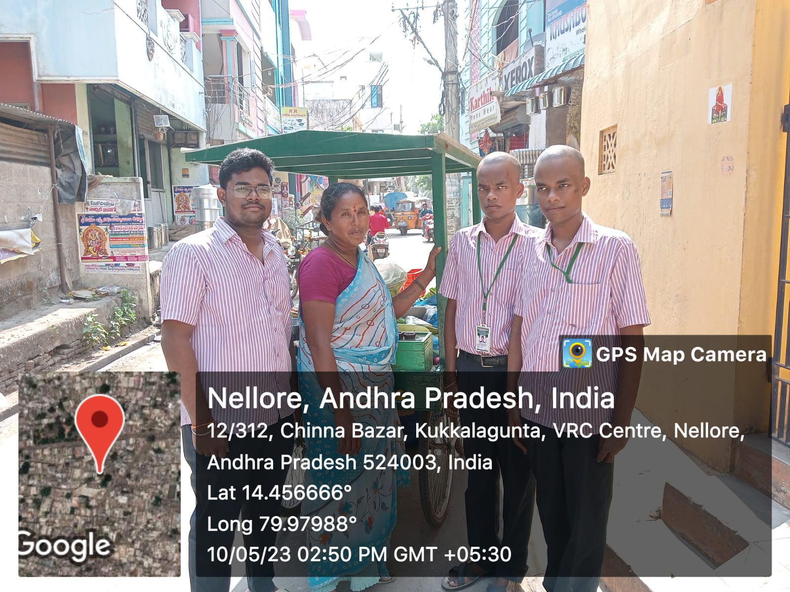

Latest Articles
Maintaining Good Health and Hygiene: Essential Practices for a Better Life
Health and hygiene play vital roles in our overall well-being. They are interconnected aspects that influence our physical, mental, and social states. By adopting and maintaining good health and hygiene practices, we can significantly improve our quality of life and reduce the risk of various diseases and infections. In this article, we will explore essential practices that promote health and hygiene, empowering you to lead a healthier and happier life.
1.Regular Handwashing: One of the most fundamental practices for maintaining good health and hygiene is regular handwashing. Our hands come into contact with countless surfaces throughout the day, accumulating germs and bacteria. By washing our hands frequently with soap and water, especially before eating or preparing food, after using the restroom, or after coughing or sneezing, we can prevent the spread of harmful pathogens and reduce the risk of infections such as colds, flu, and gastrointestinal illnesses.
2.Proper Dental Care: Oral health is an integral part of overall health. Practicing good dental hygiene helps prevent dental caries, gum diseases, and bad breath. Brush your teeth at least twice a day with fluoride toothpaste, floss daily to remove plaque between the teeth, and visit your dentist regularly for check-ups and cleanings. Maintaining proper oral hygiene can also contribute to better cardiovascular health and reduce the risk of certain medical conditions.
3.Regular Physical Activity: Engaging in regular physical activity offers numerous health benefits. Exercise helps in maintaining a healthy weight, strengthening muscles and bones, improving cardiovascular health, and enhancing overall mood and mental well-being. Aim for at least 150 minutes of moderate-intensity aerobic activity or 75 minutes of vigorous-intensity aerobic activity per week. Additionally, incorporate strength training exercises to improve muscle strength and flexibility.
4.Adequate Sleep: Quality sleep is crucial for our overall health and well-being. Lack of sleep can lead to fatigue, impaired cognitive function, weakened immune system, and increased risk of chronic conditions such as obesity, diabetes, and cardiovascular diseases. Aim for 7-9 hours of uninterrupted sleep every night, establish a regular sleep schedule, and create a conducive sleep environment by keeping the bedroom dark, quiet, and comfortable.
.jpeg)
Preventing Disease: Strategies for a Healthier Tomorrow
Prevention is the cornerstone of a healthier future. By immunizing, maintaining a healthy diet, engaging in regular physical activity, avoiding tobacco and excessive alcohol consumption, undergoing regular health screenings, managing stress, and practicing safe behaviors, we can significantly reduce the risk of various diseases.
1.Immunizations: Vaccinations are one of the most powerful tools for disease prevention. They protect against numerous infectious diseases, including measles, polio, influenza, hepatitis, and more. Ensure that you and your family are up to date with recommended immunizations according to the guidelines provided by healthcare professionals and public health authorities.
2.Healthy Eating Habits: A nutritious diet plays a crucial role in preventing chronic diseases such as obesity, diabetes, heart disease, and certain types of cancer. Emphasize a diet rich in fruits, vegetables, whole grains, lean proteins, and healthy fats. Limit the consumption of processed foods, sugary snacks, and beverages high in added sugars. Maintain portion control and strive for a well-balanced and varied diet. Remember to stay hydrated by drinking an adequate amount of water throughout the day.
3.Regular Physical Activity: Engaging in regular physical activity is vital for preventing various diseases and promoting overall well-being. Aim for at least 150 minutes of moderate-intensity aerobic activity or 75 minutes of vigorous-intensity aerobic activity per week. Additionally, incorporate strength training exercises to enhance muscle strength and flexibility. Regular exercise helps maintain a healthy weight, strengthens the cardiovascular system, improves mental health, and reduces the risk of chronic conditions such as heart disease, diabetes, and certain types of cancer.
4.Tobacco and Alcohol Avoidance: Avoiding tobacco in all forms is essential for preventing a range of diseases, including lung cancer, heart disease, stroke, and respiratory illnesses. If you smoke, seek support and resources to quit.
5.Regular Health Screenings: Routine health screenings can detect diseases in their early stages when treatment options are often more effective. Regular check-ups and screenings for conditions such as high blood pressure, cholesterol levels, diabetes, breast cancer, cervical cancer, colorectal cancer, and prostate cancer (based on gender and age) are important preventive measures.
Nourishing Your Body: The Power of Nutrition for Improved Health
Nutrition plays a pivotal role in our health and well-being. By embracing a balanced diet, prioritizing fruits and vegetables, choosing whole grains, opting for lean proteins, including healthy fats, and staying hydrated, we can nourish our bodies and reap the benefits of improved health.
1.Embrace a Balanced Diet:
A balanced diet is the foundation of good nutrition. It involves consuming a variety of foods from different food groups to ensure an adequate intake of essential nutrients. Incorporate fruits, vegetables, whole grains, lean proteins, and healthy fats into your meals. These foods provide vitamins, minerals, fiber, and antioxidants necessary for the proper functioning of our bodies.
2.Prioritize Fruits and Vegetables:
Fruits and vegetables are nutritional powerhouses that offer a wide range of health benefits. They are rich in vitamins, minerals, antioxidants, and fiber, which support digestion, boost the immune system, and reduce the risk of chronic diseases such as heart disease, cancer, and obesity. Aim to incorporate a variety of colorful fruits and vegetables into your daily meals, and consider fresh, frozen, or even canned etc.
3.Choose Whole Grains:
Whole grains are an excellent source of complex carbohydrates, fiber, vitamins, and minerals. Unlike refined grains, such as white flour and white rice, whole grains retain their nutrient-rich bran and germ layers.
5.Include Healthy Fats:
Not all fats are created equal. Healthy fats, such as monounsaturated and polyunsaturated fats, are essential for our bodies and can contribute to heart health when consumed in moderation. Sources of healthy fats include avocados, nuts, seeds, olive oil, and fatty fish like salmon and tuna. Limit the intake of saturated and trans fats found in processed foods and fried items, as they can increase the risk of heart disease.
6.Hydration is Key:
Proper hydration is often overlooked but is crucial for overall health. Water helps regulate body temperature, aids in digestion, transports nutrients, and removes waste from the body. Aim to drink an adequate amount of water throughout the day and limit the consumption of sugary beverages and excessive caffeine.
Videos
Nutrition
explanation about nutrition and balanced diet
Health and Hygiene
about health and importance of hygiene in maintaining good health
Vaccination
vaccination and its uses to children
Our Community Service Project
 

Week 1. SURVEY ON HEALTH AND HYGEINE
Week 2. CONDUCTED AWARNESS ACTIVITY ON ORAL HEALTH AND DENTAL HYGEINE
Week 3. ACTIVITY ON THE ROLE OF SANITIZATION AND HYGENIC SURROUNDINGS
Week 4. NUTRITION AND BALANCED DIET
Week 5. PROPAGATION OF VARIOUS DISEASES
ABSTRACT
Visited the few places in Nellore and conducted the survey in order to know the awareness in people about health and hygine i.e knowing the minimum knowledge in people about the health and hygenic envinorment . As mouth is the basic and first part in maintaining good health as various diseases start from our mouth so I spread awareness on dental health and oral hygine . The hygenic envinorment and surroundings plays a key role in leading a healthy life , So I stressed the role of sanitization and how to keep the surroundings clean. Nutrition supplies all required vitamins and minerals in an perfect amount to our body , so I conducted an activity in explaining the nutririon and balanced diet. I conducted awareness activity in explaining the propagation of various types of diseases and identifying the various sources of propagation and stopping them.
Our Achievements
- We educated the people of the area about the health and hygiene
- I made the people to know well about sanitization
- People recived us and participated in all of our activities
- Vaccination and its uses are explained to illeterates
- As Prevention Is Better Than Cure i explained the people about various preventive measures
Our Activities
- We distributed the hygine kits to the people
- conducted a sanitization drive in the area
- Identified the host areas of various diseases and stopped them or sealed them
- conducted an awarness activity in the local area
- went to homes and explaines about the various nutrition measures and balanced diet